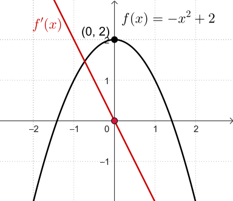
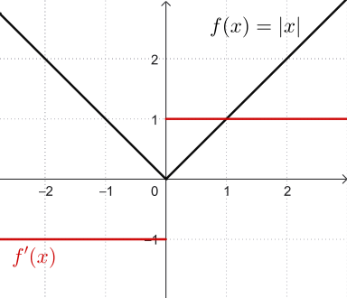

Calculus I
&
Engineering Mathematics 2
Workshop 4
Derivative Tests: Derivative tests use the first and second derivatives of a function to analyse its behaviour and classify stationary points.
A critical point occurs where \( f'(x) = 0 \)
or where \( f'(x) \) does not
exist.
|
 |
 |
First Derivative Test
| Behaviour of \(f'(x)\) | Conclusion |
| Changes from positive to negative | Local maximum |
| Changes from negative to positive | Local minimum |
| No sign change | Stationary point of inflection |
Second Derivative Test
| Condition at \(x = a\) | Conclusion |
| \( f'(a)=0 \) and \( f''(a) > 0 \) | Local minimum |
| \( f'(a)=0 \) and \( f''(a) < 0 \) | Local maximum |
| \( f'(a)=0 \) and \( f''(a) = 0 \) | Test inconclusive |
Concavity
| Condition on \(f''(x)\) | Conclusion |
| \( f''(x) \gt 0 \) | Concave upwards \(\cup\) |
| \( f''(x) \lt 0 \) | Concave downwards \(\cap\) |
Points of Inflection
| Condition at \(x = a\) | Conclusion |
| \( f''(a) = 0 \) and concavity changes | Point of inflection |
First Derivative Test
| Behaviour of \(f'(x)\) | Conclusion |
| Changes from positive to negative | Local maximum |
| Changes from negative to positive | Local minimum |
| No sign change | Stationary point of inflection |
Second Derivative Test
| Condition at \(x = a\) | Conclusion |
| \( f'(a)=0 \) and \( f''(a) > 0 \) | Local minimum |
| \( f'(a)=0 \) and \( f''(a) < 0 \) | Local maximum |
| \( f'(a)=0 \) and \( f''(a) = 0 \) | Test inconclusive |
| Concavity | Inflection Points | ||
| Condition on \(f''(x)\) | Conclusion | Condition at \(x = a\) | Conclusion |
| \( f''(x) > 0 \) | Concave upwards | \( f''(a) = 0 \) and concavity changes | Point of inflection |
| \( f''(x) < 0 \) | Concave downwards | No change in concavity | No point of inflection |